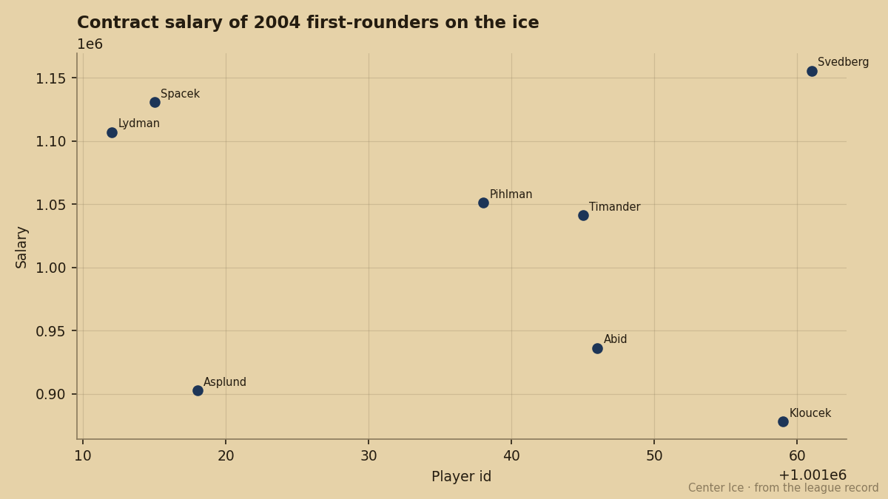
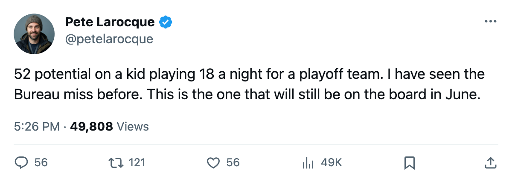

LA
LA STL
STLThe 10th Pick Plays More Than the 1st. The Bureau Gives Him 52 Potential.
Tuomas Lydman leads all 2004 first-rounders in games, points, and ice time. The Book says he is already finished.
 Pete LarocqueScouting editor · The Prospect File
Pete LarocqueScouting editor · The Prospect File
Tuomas Lydman72 was the 10th pick last June. He has played 62 games for  Mighty Ducks of Anaheim, scored 25 points, and skated 18.1 minutes a night. He sits 74 overall in the Book. The Bureau gives him 52 potential, the lowest figure attached to any first-rounder from that draft.
Mighty Ducks of Anaheim, scored 25 points, and skated 18.1 minutes a night. He sits 74 overall in the Book. The Bureau gives him 52 potential, the lowest figure attached to any first-rounder from that draft.
The 1st pick, Vaclav Spacek74, has 91 potential. He plays 8.3 minutes for a 108-point  Toronto Maple Leafs club and has 16 points in 45 games. The 4th pick, Mika Sulku69, carries 92 potential and 7.7 minutes in 40 appearances for
Toronto Maple Leafs club and has 16 points in 45 games. The 4th pick, Mika Sulku69, carries 92 potential and 7.7 minutes in 40 appearances for  Calgary Flames. The 7th, Marcel Janota71, is a goaltender who has dressed once.
Calgary Flames. The 7th, Marcel Janota71, is a goaltender who has dressed once.
Across the top 10, the five guys with 89 or higher potential sit on the bench or in sheltered minutes. The five guys with 67 or lower play the most.

The Bureau wrote him off at 20
Lydman's grades tell you why the ice time came. His puck handling sits at 82, his checking at 79, his accuracy at 76, his speed at 75, his shot power at 73. Those are top-six winger numbers. The aggregate is 74 overall on a club fighting for a playoff spot in the Pacific. The Development Index has him at zero, which means the overall matches the base.
The potential of 52 is the problem. The Book is telling Anaheim that this 20-year-old is done. He has 2 years left on a $1.11M contract. If the Bureau is right, Anaheim owns a 74-overall winger for 2 seasons and then nothing. If the Bureau is wrong, they own a piece that out-plays every 2004 first-rounder the Bureau still rates.
The 9th pick, Tuomo Pihlman73, tells the same story in a different jersey. 56 games, 28 points, 12.6 minutes for a 55-point  Minnesota Wild team. Overall 65, potential 56. He is the most productive 2004 first-rounder by points and the second-lowest ceiling in the top 10. Minnesota is rebuilding around a group the Bureau says will not get much better.
Minnesota Wild team. Overall 65, potential 56. He is the most productive 2004 first-rounder by points and the second-lowest ceiling in the top 10. Minnesota is rebuilding around a group the Bureau says will not get much better.
| pick | player | team | gp | pts | mpg | overall | potential |
|---|---|---|---|---|---|---|---|
| 1 | Spacek | TOR | 45 | 16 | 8.3 | 75 | 91 |
| 2 | Timander73 | DAL | 27 | 17 | 16.6 | 71 | 66 |
| 3 | Duba68 | LA | 39 | 10 | 8.7 | 70 | 51 |
| 4 | Sulku | CGY | 40 | 5 | 7.7 | 71 | 92 |
| 5 | Salminen | PIT | 31 | 10 | 17.0 | 68 | 63 |
| 6 | Ronnqvist | MTL | 45 | 6 | 8.6 | 64 | 76 |
| 7 | Janota | CAR | 1 | 60.0 | 69 | 89 | |
| 8 | Kloucek | STL | 54 | 3 | 10.9 | 64 | 67 |
| 9 | Pihlman | MIN | 56 | 28 | 12.6 | 65 | 56 |
| 10 | Lydman | ANA | 62 | 25 | 18.1 | 74 | 52 |
What the draft got wrong
I have been reading potential figures for twenty years. The Bureau's promise is that potential tells you where a player is going. The Book's current grades tell you where he is. When those two disagree by 22 points, one of them is wrong.
If Lydman is 74 and finished, the Ducks got a serviceable bottom-six winger at 10. If Lydman is 74 and the potential is a mistake, they got a top-six winger at 10. The 18.1 minutes suggest the coach does not believe the potential figure. Neither should a front office that owns the player for 2 more years.
The salary is $1.11M. The 1st pick costs $1.13M. The 13th pick, Patrik Svedberg73, costs $1.16M for 6 points in 53 games at 9.9 minutes. The 2nd pick, Kristian Timander, costs $1.04M and has been scratched. Nobody in the top 10 costs more than $1.16M.
Anaheim sits at 80 points, 2nd in the Pacific, 11 games ahead of  San Jose Sharks. Lydman is part of a core that is winning now. The potential figure says enjoy it while it lasts. The 62 games say the Bureau missed on him, or the draft missed on everyone else.
San Jose Sharks. Lydman is part of a core that is winning now. The potential figure says enjoy it while it lasts. The 62 games say the Bureau missed on him, or the draft missed on everyone else.
The 10th pick with 52 potential who plays 18.1 minutes is the line that matters for the next June board. It tells you the potential figure is noise in the middle of the first round. The kids who play, play because coaches can see something the aggregate does not capture. The kids with 90+ potential who sit are not being hidden. They are not good enough yet.
